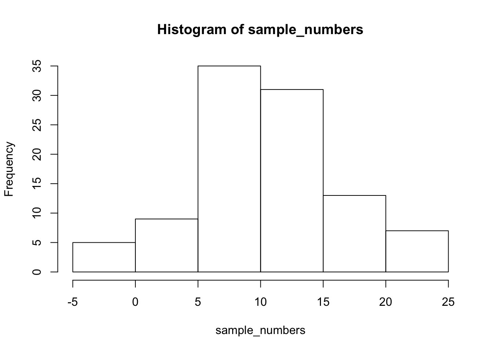

Chapter 2 Lab 2: Descriptive Statistics
Some inspiring quote —Inspiring Person
2.1 Outline of Problem to solve
Stuff we need to say in general
2.1.1 important things
Other things to say
2.2 R
2.2.1 Descriptives basics in R
We learned in lecture and from the textbook that data we want to use ask and answer questions often comes with loads of numbers. Too many numbers to look at all at once. That’s one reason we use descriptive statistics. To reduce the big set of numbers to one or two summary numbers that tell use something about all of the numbers. R can produce descriptive statistics for you in many ways. There are base functions for most of the ones that you want. We’ll go over some R basics for descriptive statistics, and then use our new found skills to ask some questions about real data.
2.2.1.1 Making numbers in R
In order to do descriptive statistics we need to put some numbers in a variable. You can also do this using the c() command, which stands for combine
my_numbers <- c(1,2,3,4)There a few other handy ways to make numbers. We can use seq() to make a sequence. Here’s making the numbers from 1 to 100
one_to_one_hundred <- seq(1,100,1)We can repeat things, using rep. Here’s making 10 5s, and 25 1s:
rep(10,5)## [1] 10 10 10 10 10rep(1,25)## [1] 1 1 1 1 1 1 1 1 1 1 1 1 1 1 1 1 1 1 1 1 1 1 1 1 1all_together_now <- c(rep(10,5),rep(1,25)) 2.2.1.2 Sum
Let’s play with the number 1 to 100. First, let’s use the sum() function to add them up
one_to_one_hundred <- seq(1,100,1)
sum(one_to_one_hundred)## [1] 50502.2.1.3 Length
We put 100 numbers into the variable one_to_one_hundred. We know how many numbers there are in there. How can we get R to tell us? We use length() for that.
length(one_to_one_hundred)## [1] 1002.2.2 Central Tendency
2.2.2.1 Mean
Remember the mean of some numbers is their sum, divided by the number of numbers. We can compute the mean like this:
sum(one_to_one_hundred)/length(one_to_one_hundred)## [1] 50.5Or, we could just use the mean() function like this:
mean(one_to_one_hundred)## [1] 50.52.2.2.2 Median
The median is the number in the exact middle of the numbers ordered from smallest to largest. If there are an even number of numbers (no number in the middle), then we take the number in between the two (decimal .5). Use the median function. There’s only 3 numbers here. The middle one is 2, that should be the median
median(c(1,2,3))## [1] 22.2.2.3 Mode
R does not a base function for the Mode. You would have to write one for yourself. Here is an example of writing your own mode function, and then using it. Note I searched how to do this on Google, and am using the mode defined by this answer on stack overflow
Remember, the mode is the most frequently occurring number in the set. Below 1 occurs the most, so the mode will be one.
my_mode <- function(x) {
ux <- unique(x)
ux[which.max(tabulate(match(x, ux)))]
}
my_mode(c(1,1,1,1,1,1,1,2,3,4))## [1] 12.2.3 Variation
We often want to know how variable the numbers are. We are going to look at descriptive statistics to describe this such as the range, variance, the standard deviation, and a few others.
First, let’s remind ourselves what variation looks like (it’s when the numbers are different). We will sample 100 numbers from a normal distribution (don’t worry about this yet), with a mean of 10, and a standard deviation of 5, and then make a histogram so we can see the variation around 10..
sample_numbers <- rnorm(100,10,5)
hist(sample_numbers)
2.2.3.1 range
The range is the minimum and maximum values in the set, we use the range function.
range(sample_numbers)## [1] -4.626078 23.5134802.2.3.2 var = variance
We can find the sample variance using var. Note, divides by (n-1)
var(sample_numbers)## [1] 32.617412.2.3.3 sd = standard deviation
We find the sample standard deviation us SD. Note, divides by (n-1)
sd(sample_numbers)## [1] 5.711165Remember that the standard deviation is just the square root of the variance, see:
sqrt(var(sample_numbers))## [1] 5.7111652.2.3.4 All Descriptives
Let’s put all of the descriptives and other functions so far in one place:
sample_numbers <- rnorm(100,10,5)
sum(sample_numbers)## [1] 987.365length(sample_numbers)## [1] 100mean(sample_numbers)## [1] 9.87365median(sample_numbers)## [1] 10.40356my_mode(sample_numbers)## [1] 14.32738range(sample_numbers)## [1] -3.26034 20.05582var(sample_numbers)## [1] 23.25149sd(sample_numbers)## [1] 4.821982.2.4 Descriptives by conditions
Sometimes you will have a single variable with some numbers, and you can use the above functions to find the descriptives for that variable. Other times (most often in this course), you will have a big data frame of numbers, with different numbers in different conditions. You will want to find descriptive statistics for each the sets of numbers inside each of the conditions. Fortunately, this is where R really shines, it does it all for you in one go.
Let’s illustrate the problem. Here I make a date frame with 10 numbers in each condition. There are 10 conditions, each labelled, A, B, C, D, E, F, G, H, I, J.
scores <- rnorm(100,10,5)
conditions <- rep(c("A","B","C","D","E","F","G","H","I","J"), each =10)
my_df <- data.frame(conditions,scores)If you look at the my_df data frame, you will see it has 100 rows, there are 10 rows for each condition with a label in the conditions column, and 10 scores for each condition in the scores column. What if you wanted to know the mean of the scores in each condition? You would want to find 10 means.
The slow way to do it would be like this:
mean(my_df[my_df$conditions=="A",]$scores)## [1] 10.77561mean(my_df[my_df$conditions=="B",]$scores)## [1] 9.113101mean(my_df[my_df$conditions=="C",]$scores)## [1] 8.931921# and then keep goingNobody wants to do that! Not, me I stopped doing it that way, you should to.
2.2.4.1 group_by and summarise
We can easily do everything all at once using the group_by and summarise function from the dplyr package. Just watch
library(dplyr)
my_df %>%
group_by(conditions) %>%
summarise(means = mean(scores))## # A tibble: 10 x 2
## conditions means
## <fct> <dbl>
## 1 A 10.8
## 2 B 9.11
## 3 C 8.93
## 4 D 10.1
## 5 E 9.19
## 6 F 9.70
## 7 G 9.63
## 8 H 11.1
## 9 I 9.43
## 10 J 10.2A couple things now. First, the print out of this was ugly. Let’s fix that. we put the results of our code into a new variable, then we use knitr::kable to print it out nicely when we knit the document
summary_df <- my_df %>%
group_by(conditions) %>%
summarise(means = mean(scores))
knitr::kable(summary_df)| conditions | means |
|---|---|
| A | 10.775607 |
| B | 9.113101 |
| C | 8.931921 |
| D | 10.113394 |
| E | 9.189557 |
| F | 9.703250 |
| G | 9.633954 |
| H | 11.128139 |
| I | 9.430020 |
| J | 10.209199 |
2.2.4.2 multiple descriptives
The best thing about the dplyr method, is that we can add more than one function, and we’ll get more than one summary returned, all in a nice format, let’s add the standard deviation:
summary_df <- my_df %>%
group_by(conditions) %>%
summarise(means = mean(scores),
sds = sd(scores))
knitr::kable(summary_df)| conditions | means | sds |
|---|---|---|
| A | 10.775607 | 3.425323 |
| B | 9.113101 | 5.103782 |
| C | 8.931921 | 5.742362 |
| D | 10.113394 | 6.858703 |
| E | 9.189557 | 4.986274 |
| F | 9.703250 | 6.163809 |
| G | 9.633954 | 3.502455 |
| H | 11.128139 | 3.407772 |
| I | 9.430020 | 5.036934 |
| J | 10.209199 | 4.473776 |
We’ll add the min and the max too:
summary_df <- my_df %>%
group_by(conditions) %>%
summarise(means = mean(scores),
sds = sd(scores),
min = min(scores),
max = max(scores))
knitr::kable(summary_df)| conditions | means | sds | min | max |
|---|---|---|---|---|
| A | 10.775607 | 3.425323 | 5.2937984 | 16.68126 |
| B | 9.113101 | 5.103782 | 0.9804814 | 18.02586 |
| C | 8.931921 | 5.742362 | -0.9528502 | 20.54278 |
| D | 10.113394 | 6.858703 | 3.1369162 | 21.76615 |
| E | 9.189557 | 4.986274 | 1.4721926 | 17.67410 |
| F | 9.703250 | 6.163809 | 1.2157527 | 24.26836 |
| G | 9.633954 | 3.502455 | 4.5541162 | 14.61670 |
| H | 11.128139 | 3.407772 | 4.2969540 | 16.13832 |
| I | 9.430020 | 5.036934 | 2.3587562 | 18.46686 |
| J | 10.209199 | 4.473776 | 3.0511460 | 17.74034 |
2.2.5 Describing gapminder
Now that we know how to get descriptive statistics from R, we cam do this will some real data. Let’s quickly ask a few question about the gapminder data. Re-install the gapminder library if you don’t already have it, then load the data into a data frame:
library(gapminder)
gapminder_df <- gapminder2.2.5.1 What are some descriptive for Life expectancy by continent?
Copy the code from the last part of descriptives using dplyr, then change the names like this:
summary_df <- gapminder_df %>%
group_by(continent) %>%
summarise(means = mean(lifeExp),
sds = sd(lifeExp),
min = min(lifeExp),
max = max(lifeExp))
knitr::kable(summary_df)| continent | means | sds | min | max |
|---|---|---|---|---|
| Africa | 48.86533 | 9.150210 | 23.599 | 76.442 |
| Americas | 64.65874 | 9.345088 | 37.579 | 80.653 |
| Asia | 60.06490 | 11.864532 | 28.801 | 82.603 |
| Europe | 71.90369 | 5.433178 | 43.585 | 81.757 |
| Oceania | 74.32621 | 3.795611 | 69.120 | 81.235 |
2.2.6 Generalization Exercise
Complete the generalization exercise described in your R Markdown document for this lab.
2.2.7 Writing asignment
Complete the writing assignment described in your R Markdown document for this lab. When you have finished everything. Knit the document and hand in your stuff (you can submit your .RMD file to blackboard if it does not knit.)
2.3 Excel
How to do it in Excel
2.4 SPSS
How to do it in SPSS
2.5 JAMOVI
How to do it in JAMOVI